Welcome!
I am a Costa Rican biologist passionate about exploring and conserving plant diversity. My academic training includes a master’s degree in ecology and systematic biology from San Francisco State University, a Ph.D. in plant sciences from the City University of New York, and postdoctoral research at the University of Wisconsin–Madison. I currently serve as Assistant Curator and McAllister Chair of Botany at the California Academy of Sciences. My research centers on the taxonomy and evolution of the princess flower family (Melastomataceae) and the diverse genus Salvia, but I am broadly interested in the evolution and diversity of flowers.
Publications
-
2026
Pacifico, R., and Kriebel, R. 2026. Microlicia almedae (Melastomataceae), a new species from the Chapada Diamantina, Bahia, Brazil. PhytoKeys 276: 183-195. doi.org/10.3897/phytokeys.276.193021
-
Almeda, F., Solano, D., Penneys, D.S. and Kriebel, R. 2026. New species of Blakea (Melastomataceae: Pyxidantheae) from Costa Rica and Panama. Phytotaxa 760: 230–240. doi.org/10.11646/phytotaxa.760.3.3
-
Kriebel, R., Daniel, T.F. and K.J. Sytsma. 2026. The evolution of protandry with staminal movement in Old World Justicieae (Acanthaceae) and its loss and regain in the Neotropics. Botanical Journal of the Linnean Society. doi.org/10.1093/botlinnean/boag044
-
Zaborsky, J.G., Rose, J.P., Kriebel, R., Drew, B., Lemmon, E.M., Lemmon, A.R., and K.J. Sytsma. 2026. Evaluating the “African Arid Corridor” Hypothesis: a Meta-analysis Including the Phylogenetic and Biogeographic History of Sesamothamnus (Pedaliaceae). American Journal of Botany. doi.org/10.1002/ajb2.70192
-
Russell, A.L., Zenil-Ferguson, R., Buchmann, S.L., Jolles, D.D., Kriebel, R., and M.L. Vallejo-Marin. 2026. Widespread evolution of poricidal flowers: A striking example of morphological convergence across flowering plants. Evolution: qpaf220. doi.org/10.1093/evolut/qpaf220
-
2025
Sperotto, P., Vasconcelos, T., Kriebel, R., and M. Reginato. 2025. Evolutionary shift in petal function from pollinator attraction to water drainage in small buzz-pollinated flowers. Evolution: qpaf183. doi.org/10.1093/evolut/qpaf183
-
Montoya, Q.V., Gerardo, N.M., Sutta Martiarena, M.J., Solís-Lemus, C., Kriebel, R., Schultz, T.R., Sosa-Calvo, J., and A. Rodrigues. 2025. Digging into the evolutionary history of fungus-growing-ant symbionts in the genus Escovopsis (Hypocreaceae). Communications Biology 8: 1340. doi.org/10.1038/s42003-025-08654-z
-
2024
Russell, A.L., Buchmann, S.L., Ascher, J.S., Wang, Z., Kriebel, R., Jolles, D.D., Orr, M.C., and A.C. Hughes. 2024b. Buzz-world: Global patterns and drivers of buzzing bees and poricidal plants. Current Biology 34: 3055-3063.e5. doi.org/10.1016/j.cub.2024.05.065
-
Kriebel, R., and T.F. Daniel. 2024. Acanthaceae, an additional Angiosperm family with staminal levers. Harvard Papers in Botany 29: 97-99. doi.org/10.3100/hpib.v29iss1.2024.n11
-
Rose, J.P., Kriebel, R., Sytsma, K.J., and B.T. Drew. 2024. Phylogenomic perspectives on speciation and reproductive isolation in a North American biodiversity hotspot: An example using California sages (Salvia subg. Audibertia; Lamiaceae). Annals of Botany. doi.org/10.1093/aob/mcae073
-
Reginato, M., Ordónez-Parra, C.A., Messeder, J.V.S., Brito, V.L.G., Dellinger, A., Kriebel, R., Marra, C. et al. 2024. MelastomaTRAITs 1.0: A Database of Functional Traits in Melastomataceae, a Large Pantropical Angiosperm Family. Ecology e4308. doi.org/10.1002/ecy.4308
-
2023
Daniel, T. F. and Kriebel, R.. 2023. Stenostephanus purpureus (Acanthaceae: Justicieae: Isoglossinae), a new species from Costa Rica and Panama – Overlooked for more than 150 years. Harvard Papers in Botany 28: 655-662. doi.org/10.3100/hpib.v28iss2.2023.n3
-
Jiménez, J. E., Chinchilla, I. F., and Kriebel, R.. 2023. Columnea blancoi (Gesneriaceae), a new species from the central Pacific region of Costa Rica. Harvard Papers in Botany 28: 51-59. doi.org/10.3100/hpib.v28iss1.2023.n6
-
Kriebel, R., Rose, J.P., Bastide, P., Jolles, D., Reginato, M., and K.J. Sytsma. 2023. The evolution of Ericaceae flowers and their pollination syndromes at a global scale. American Journal of Botany 110: e16220. doi.org/10.1002/ajb2.16220
-
Kriebel, R., Drew, B.T., Claßen-Bockhoff, R., and K.J. Sytsma. 2023. Evolution of anther connective teeth in sages (Salvia, Lamiaceae) under bee and hummingbird pollination. Flora 298: 152199. doi.org/10.1016/j.flora.2022.152199
-
Kriebel, R., Rose, J.P., Drew, B.T., González-Gallegos, J.G., Celep, F., Mahdjoub, M.M., Heeg, L., and Sytsma K.J. 2023. Model selection, hummingbird natural history, and biological hypotheses: a response to Sazatornil et al. Evolution 77: 646-653. doi.org/10.1093/evolut/qpac023
-
Pacifico, R., Almeda, F., and Kriebel, R. 2023a. Microlicia delicata and Microlicia pumila (Melastomataceae), two new species from unprotected mountains with campo rupestre vegetation in eastern Brazil. Phytotaxa 599: 207-224. doi.org/10.11646/phytotaxa.599.4.1
-
Pacifico, R., Almeda, F., and Kriebel, R. 2023b. A Phylogenetic Analysis of Marcetia (Melastomataceae, Marcetieae) and Three New Sprawling Species from Bahia, Brazil. Systematic Botany 48: 544–563. doi.org/10.1600/036364423X17000842565740
-
2022
Soza, V.L., Kriebel, R., Ramage, E., Hall, B.D. and Twyford, A.D. 2022. The symmetry spectrum in a hybridising, tropical group of rhododendrons. New Phytologist 234: 1491-1506. doi.org/10.1111/nph.18083
-
Michelangeli, F. A. et al. 2022. Historical biogeography of the Neotropical Miconieae (Melastomataceae) reveals a pattern of progressive colonization out of lowland South America. In R. Goldenberg, F. Michelangeli, and F. Almeda (Eds.), Systematics, Evolution, and Ecology of Melastomataceae (pp. 629-644). Springer. doi.org/10.1007/978-3-030-99742-7_28
-
Kriebel, R., Drew, B.T., Gonzalez-Gallegos, J.G., Celep, F., Antar, G.M., Pastore, J.F.B., Uria, R., Sytsma, K.J. 2022. Stigma shape shifting in sages (Salvia: Lamiaceae): hummingbirds guided the evolution of New World floral features. Botanical Journal of the Linnean Society 199: 428-448. doi.org/10.1093/botlinnean/boab096
-
2021
Rose, J.P., Kriebel, R., Kahan, L., DiNicola, A., González-Gallegos, J.G., Celep, F., Lemmon, E.M., Lemmon, A.R., Sytsma, K.J., Drew, B.T. 2021. Sage insights into the phylogeny of Salvia: Dealing with sources of discordance within and across genomes. Frontiers in Plant Science 12: 767478. doi.org/10.3389/fpls.2021.767478
-
2020
Givnish, T.J., Kriebel, R., Zaborsky, J.G., Rose, J.P., Waller, D.M., Cameron, K.M., and Sytsma, K.J. 2020. Adaptive associations among life history, flowering, and mating system traits in native and introduced angiosperm floras. American Journal of Botany 107: 1677-1692. doi.org/10.1002/ajb2.1578
-
Gavrutenko, M., Reginato, M., Kriebel, R., Nicolas, A. N., and F. A. Michelangeli. 2020. Evolution of Floral Morphology and Symmetry in the Miconieae (Melastomataceae): Multiple Generalization Trends within a Specialized Family. International Journal of Plant Sciences 181: 732-747. doi.org/10.1086/708906
-
Reginato, M., T. N.C. Vasconcelos, R. Kriebel, A. Olmos Simões. 2020. Is dispersal mode a driver of diversification and geographical distribution in the tropical plant family Melastomataceae? Molecular Phylogenetics and Evolution 148: 106815. doi.org/10.1016/j.ympev.2020.106815
-
Kriebel, R., Drew, B.T., González-Gallegos, J.G., Celep, F., Mahdjoub, M.M., Heeg, L., and Sytsma K.J. 2020. Pollinator shifts, contingent evolution, and evolutionary constraint drive the diversification of Salvia (Lamiaceae) flowers: evidence from morphometrics and phylogenetic comparative methods. Evolution: doi.org/10.1111/evo.14030
-
Givnish, T.J., Skinner, M.W., Resetnik, I., Ikinci, N, Kriebel, R., Lemmon, A.R., Lemmon, E.M., and Gao, Y.D. 2020. Evolution, geographic spread, and floral diversification of the genus Lilium, with special reference to the lilies of North America. North American Lily Society Quarterly Bulletin 74: 26-44.
-
2019
Kriebel, R., Drew, B.T., Drummond, C.P., González-Gallegos, J.G., Celep, F., Mahdjoub, M.M., Rose, J.P., Xiang, C.L., Hu, G.X., Walker, J.B., Lemmon, E.M., Lemmon, A.R., and Sytsma K.J. 2019. Tracking the temporal shifts in area, biomes, and pollinators in the radiation of Salvia (sages, Lamiaceae) across continents: leveraging Anchored Hybrid Enrichment and targeted sequence data. American Journal of Botany 106: 573-597. doi.org/10.1002/ajb2.1268
-
2018
Spalink, D., Kriebel, R., Li, P., Pace, M.C., Drew, B.T., Zaborsky, J.G., Rose, J., Drummond, C., Feist, M.A., Alverson, B., Waller, D., Cameron, K.M., Givnish, T.J., Sytsma, K.J. 2018. Spatial phylogenetics reveals evolutionary constraints on the assembly and future migration of a regional vascular flora. American Journal of Botany 105: 1938-1950. doi.org/10.1002/ajb2.1191
-
Santibañez-López, C.E., Kriebel, R., Ballesteros, J.A., Rush, N., Witter, Z., Williams, J., Janies, D.A. and Sharma, P.P. 2018. Integration of phylogenomics and molecular modeling reveals lineage-specific diversification of toxins in scorpions. PeerJ 6: e5902. doi.org/10.7717/peerj.5902
-
Bastide, P., C. Solís-Lemus, R. Kriebel, K.W. Sparks, C. Ané. 2018. Phylogenetic Comparative Methods for Phylogenetic Networks with Reticulations. Systematic Biology 67: 800-820. doi.org/10.1093/sysbio/syy033
-
Kandlikar, G., M. Vaz, R. Kriebel, G. Vargas, F. Michelangeli, R. Cordero, F. Almeda, G. Avalos, N. Fetcher, and N. Kraft. 2018. Contrasting patterns of taxonomic, phylogenetic and functional variation along a Costa Rican altitudinal gradient in the plant family Melastomataceae. Journal of Tropical Ecology 34: 204-208. doi.org/10.1017/S0266467418000172
-
Stoughton, T. R., R. Kriebel, Jolles, D. D., and R. L. O'Quinn. 2018. Next Generation Lineage Discovery: a Case Study of Tuberous Claytonia L. (Montiaceae). American Journal of Botany 105: 536-548. doi.org/10.1002/ajb2.106
-
Smith, S.D., and R. Kriebel. 2018. Convergent evolution of floral shape tied to pollinator shifts in Iochrominae (Solanaceae). Evolution 72: 688-697. doi.org/10.1111/evo.13416
-
Sharma, P. P., J. Oberski, M. A. Santiago, R. Kriebel, S. M. Lipps, P. A. C. Buenavente, A. C. Diesmos, M. Janda, S. L. Boyer, R. M. Clouse, and W. C. Wheeler. 2018. There is no evidence that Podoctidae carry eggs of their own species: Reply to Machado and Wolff (2017). Molecular Phylogenetics and Evolution 129: 349-353. doi.org/10.1016/j.ympev.2017.03.026
-
2017
Kriebel, R., Khabbazian, M., and K. J. Sytsma. 2017. A continuous morphological approach to study the evolution of pollen in a phylogenetic context: an example with the order Myrtales. PLoS ONE 12: e0187228. doi.org/10.1371/journal.pone.0187228
-
Santibañez-López, C., Kriebel, R., Sharma, P. 2017. eadem figura manet: Measuring morphological convergence in diplocentrid scorpions (Arachnida: Scorpiones: Diplocentridae) under a multilocus phylogenetic framework. Invertebrate Systematics 31: 233-248. doi.org/10.1071/IS16078
-
Givnish, T.J., and R. Kriebel. 2017. Causes of ecological gradients in leaf margin entirety: Evaluating the roles of biomechanics, hydraulics, vein geometry, and bud packing. American Journal of Botany 104: 354-366. doi.org/10.3732/ajb.1600287
-
Drew, B.T., Gonzáles-Gallegos, J.G., Xiang, C., Kriebel, R., Drummond, C.P., Walker, J.B., and K.J. Sytsma. 2017. Salvia united: The greatest good for the greatest number. Taxon 66: 133-145. doi.org/10.12705/661.7
-
Sharma, P. P., M. A. Santiago, R. Kriebel, S. M. Lipps, P. A. C. Buenavente, A. C. Diesmos, M. Janda, S. L. Boyer, R. M. Clouse, and W. C. Wheeler. 2017. A multilocus phylogeny of Podoctidae (Arachnida, Opiliones, Laniatores) and parametric shape analysis reveal the disutility of subfamiliar nomenclature in armored harvestman systematics. Molecular Phylogenetics and Evolution 106: 164-173.
-
2016
Givnish, T.J., Spalink, D., Ames, M., Lyon, S.P., Hunter, S.J., Zuluaga, A., Doucette, A., Giraldo Caro, G., McDaniel, J. Clements, M. A., Arroya, M.T.K., Endara, L., Kriebel, R., Williams, N.H., Cameron, K.M. 2016. Orchid historical biogeography, diversification, Antarctica and the paradox of orchid dispersal. Journal of Biogeography. doi.org/10.1111/jbi.12854
-
Kriebel, R. 2016. A monograph of Conostegia (Miconieae: Melastomataceae). PhytoKeys 67: 1-326. doi.org/10.3897/phytokeys.67.6703
-
Kriebel, R. 2016. Phylogenetic placement of the monotypic genus Schwackaea (Melastomeae: Melastomataceae) and the evolution of its unique fruit. International Journal of Plant Sciences 177: 440-448. doi.org/10.1086/685689
-
Rose, J., Kriebel, R., Sytsma, K.J. 2016. Shape analysis of moss (Bryophyta) sporophytes: insights into land plant evolution. American Journal of Botany 103: 652-662. doi.org/10.3732/ajb.1500394
-
Khabbazian, M., Kriebel, R., Rohe, K., Ané, C. 2016. Fast and accurate detection of evolutionary shifts in Ornstein-Uhlenbeck models. Methods in Ecology and Evolution 7: 811-824. doi.org/10.1111/2041-210X.12534
-
Berger, B., Kriebel, R., Spalink, D., Sytsma, K.J. 2016. Divergence times, historical biogeography, and shifts in speciation rates of Myrtales. Molecular Phylogenetics and Evolution 95: 116-136. doi.org/10.1016/j.ympev.2015.10.001
-
2015
Kriebel, R., F. Michelangeli, and L. Kelly. 2015. Discovery of unusual anatomical and continuous characters in the evolutionary history of Conostegia (Melastomataceae). Molecular Phylogenetics and Evolution 82: 289-313. doi.org/10.1016/j.ympev.2014.09.021
-
Kriebel, R. 2015. New insights into anatomical and morphological adaptations to high elevations in the Melastomataceae: evidence from Chaetolepis cufodontisii and Monochaetum amabile. Flora 213: 12-19. doi.org/10.1016/j.flora.2015.03.002
-
Kriebel, R. and F. Almeda. 2015. Symplocaceae. In: B. E. Hammel, M. H. Grayum, C. Herrera and N. Zamora (eds), Manual de Plantas de Costa Rica 8: 380-388. Monographs in Systematic Botany from the Missouri Botanical Garden. 131.
-
Givnish, T.J., Spalink, D., Ames, M., Lyon, S.P., Hunter, S.J., Zuluaga, A., Iles, W.J.D., Clements, M.A., Arroya, M.T.K., Leebens-Mack, J., Endara, L., Kriebel, R., Neubig, K.M., Whitten, M.M., Williams, N.H., Cameron, K.M. 2015. Orchid phylogenomics and multiple drivers of their extraordinary diversification. Proceedings of the Royal Society B 282: 20151553. doi.org/10.1098/rspb.2015.1553
-
2014
Kriebel, R. and M. Zumbado. 2014. New reports of generalist insect visitation to flowers of species of Miconia (Miconieae: Melastomataceae) and their evolutionary implications. Brittonia 66: 396-404.
-
Kriebel, R. 2014. Notes on the floral morphology and anatomy of Tessmannianthus carinatus (Melastomataceae). Caldasia 36: 17-22. doi.org/10.15446/caldasia.v36n1.43888
-
Kriebel, R. 2014. Sexual dimorphism in the flowers of Aegiphila odontophylla (Lamiaceae). Systematic Botany 39: 1204-1207. doi.org/10.1600/036364414X683930
-
2013
Kriebel, R. and F. Almeda. 2013. Two new species of Miconia (Melastomataceae: Miconieae) from the cloud forests of Panama. Phytotaxa 134: 27-41. doi.org/10.11646/phytotaxa.134.1.2
-
Kriebel, R. and F. Almeda. 2013. Clinal variation and the decoupling of vegetative and reproductive characters in Acisanthera section Acisanthera (Melastomataceae). Harvard Papers in Botany 18: 157-172. doi.org/10.3100/025.018.0211
-
Kriebel, R. and F. Oviedo. 2013. A new species of Miconia from the remaining primary forest at Las Cruces Biological Station in Costa Rica. Phytotaxa 126: 55-60. doi.org/10.11646/phytotaxa.126.1.7
-
Kriebel, R. and D. Santamaría. 2013. A new species of Blakea (Melastomataceae) from Panama with foliaceous sepal appendages and zygomorphic flowers. Brittonia 65: 1-4.
-
Michelangeli, F. A., Guimaraes, P. J. F., Penneys, D. S., Almeda, F. and R. Kriebel. 2013. Phylogenetic relationships and distribution of New World Melastomeae (Melastomataceae). Botanical Journal of the Linnean Society 171: 38-60. doi.org/10.1111/j.1095-8339.2012.01295.x
-
2012
Daniel, T.F., M.E. Véliz P., and R. Kriebel. 2012. New distribution records of Acanthaceae in Guatemala. Phytoneuron 79: 1-5.
-
Kriebel, R. and Almeda, F. 2012. Five new species of Miconia (Melastomataceae: Miconieae) from Costa Rica and Panama. Harvard Papers in Botany 17: 53-64. doi.org/10.2307/41761746
-
Kriebel, R. 2012. Synopsis of the genus Poteranthera Bong. (Melastomeae: Melastomataceae) with the description of a new, apparently pollinator deceiving species. Brittonia 64: 6-14. doi.org/10.1007/s12228-011-9192-2
-
Kuemmerlen, M., Garrigues, R., Kriebel, R. and A. Solano 2012. El Rodeo, Cerros de Escazú and La Carpintera (CR008), In Important Bird Areas in Costa Rica, pp. 85-89. Unión de Ornitólogos de Costa Rica.
-
2010
Prance, G. T., Rodríguez, A. and Kriebel, R. 2010. Dichapetalaceae. In: B. E. Hammel, M. H. Grayum, C. Herrera and N. Zamora (eds), Manual de Plantas de Costa Rica 5: 190 – 202. Monographs in Systematic Botany from the Missouri Botanical Garden. 119.
-
Kriebel, R. 2010. Gesneriaceae. In: B. E. Hammel, M. H. Grayum, C. Herrera and N. Zamora (eds), Manual de Plantas de Costa Rica 5: 844 – 930. Monographs in Systematic Botany from the Missouri Botanical Garden. 119.
-
2009
Goldenberg, R., Guimaraes, P. J. F., Kriebel, R. and Romero, R. 2009. In Plantas da Floresta Atlantica, eds. Stehmann, J. R., Forzza, R. C., Salino, A., Sobral, M., Costa, D. P. d. & Kamino, L. H. Y. (Instituto de Pesquisas Jardim Botanico do Rio de Janeiro, Rio de Janeiro), pp. 330-343.
-
Kriebel, R. and F. Almeda. 2009. Three new species in the Neotropical shrubby genus Clidemia (Melastomataceae: Miconieae). Brittonia 61: 206-217. doi.org/10.1007/s12228-009-9098-4
-
2008
Kriebel, R., Aguilar, R. and F. Almeda. 2008. A new and threatened arborescent Miconia (Melastomataceae: Miconieae) from the Osa Peninsula, Costa Rica. Proceedings of the California Academy of Sciences 59: 489-495.
-
Fritsch, P. W., L. M. Kelly, Y. Wang, F. Almeda, and R. Kriebel. 2008. Revised infrafamilial classification of Symplocaceae based on phylogenetic data from DNA sequences and morphology. Taxon 57: 823-852. doi.org/10.1002/tax.573013
-
2007
Almeda, F., R. Kriebel, and G. Umaña. 2007. Melastomataceae. Pages 394-574 in B.E. Hammel, M.H. Grayum, C. Herrera, and N. Zamora, eds. Manual de Plantas de Costa Rica. Vol. 6. Dicotiledóneas (Haloragaceae-Piperaceae). Monographs in Systematic Botany from the Missouri Botanical Garden Vol. 111.
-
2006
Kriebel, R. 2006. Gesneriáceas de Costa Rica / Gesneriads of Costa Rica. Editorial INBio. 350 pp.
-
Kriebel, R. 2006. A widespread new species in the Neotropical berry-fruited genus Clidemia and range extension of Ossaea quadrisulca (Melastomataceae: Miconieae). Proceedings of the California Academy of Sciences 52: 587-593.
-
Kriebel, R. 2006. Drymonia tomentulifera sp. nov. de Costa Rica y notas sobre la biología reproductiva en el género Drymonia (Gesneriaceae: Episceae). Lankesteriana 6: 43-47.
-
Kriebel, R. 2006. A new species and notes on Drymonia (Gesneriaceae) from Costa Rica. Novon 16: 65-68. doi.org/10.3417/1055-3177(2006)16[65:ANSANO]2.0.CO;2
-
2005
Kriebel, R., F. Almeda, and A. Estrada. 2005. Two new species of Melastomataceae from southern Mesoamerica. Proceedings of the California Academy of Sciences 52: 675-683.
-
Kriebel, R. and A. Rodríguez. 2005. Revisión del género Dichapetalum (Dichapetalaceae) en Costa Rica. Lankesteriana 5: 121-136.
-
Kriebel, R. 2005. Una nueva especie y un nuevo registro de Drymonia (Gesneriaceae) en Costa Rica. Lankesteriana 5: 81-83.
-
Kriebel, R. 2005. A new species of Columnea and range extension in the Gesneriaceae from Costa Rica. Brittonia 57: 39-42. doi.org/10.1663/0007-196X(2005)057[0039:ANSOCA]2.0.CO;2
-
2004
Kriebel, R., J. Gonzalez and E. Alfaro. 2004. Symplocos retusa (Symplocaceae), una nueva especie de Costa Rica. Lankesteriana 4: 57-59.
-
Kriebel, R. and N. Zamora. 2004. Symplocos striata (Symplocaceae), una nueva especie de la vertiente caribe de Costa Rica. Lankesteriana 4: 171-174.
-
Kriebel, R. 2004. Two new species and one new name in the Gesneriaceae from Costa Rica. Rhodora 106: 43-51.
Data
21 datasets and code archives from the lab's publications, newest first, openly archived on Dryad, Zenodo and Figshare.
| Year | Dataset | Link |
|---|---|---|
| 2026 | Widespread evolution of poricidal flowers: A striking example of morphological convergence across flowering plants | Dryad |
| 2025 | Evolutionary shift in petal function from pollinator attraction to water drainage in small buzz-pollinated flowers | Figshare |
| 2024 | Phylogenomic perspectives on speciation in a North American biodiversity hotspot: An example using the California sages (Salvia subgenus Audibertia; Lamiaceae) | Dryad |
| 2024 | Code: Phylogenomic perspectives on speciation in a North American biodiversity hotspot (California sages, Salvia subg. Audibertia) | Zenodo |
| 2023 | A phylogenetic analysis of Marcetia (Melastomataceae, Marcetieae) and three new sprawling species from Bahia, Brazil | Dryad |
| 2022 | The symmetry spectrum in a hybridising, tropical group of rhododendrons | Dryad |
| 2022 | Code: The symmetry spectrum in a hybridising, tropical group of rhododendrons | Zenodo |
| 2021 | Stigma shape shifting in sages (Salvia: Lamiaceae): hummingbirds guided the evolution of New World floral features | Dryad |
| 2020 | Pollinator shifts, contingent evolution, and evolutionary constraint drive floral disparity in Salvia (Lamiaceae): evidence from morphometrics and phylogenetic comparative methods | Dryad |
| 2020 | Adaptive associations among life history, reproductive traits, environment, and origin in the Wisconsin angiosperm flora | Dryad |
| 2020 | Evolution of floral morphology and symmetry in the Miconieae (Melastomataceae): multiple generalization trends within a specialized family | Dryad |
| 2019 | Tracking temporal shifts in area, biomes, and pollinators in the radiation of Salvia (sages) across continents: leveraging anchored hybrid enrichment and targeted sequence data | Dryad |
| 2018 | Spatial phylogenetics reveals evolutionary constraints on the assembly of a large regional flora | Dryad |
| 2018 | Next generation lineage discovery: a case study of tuberous Claytonia L. | Dryad |
| 2018 | Phylogenetic comparative methods on phylogenetic networks with reticulations | Dryad |
| 2018 | Scorpion calcin toxin data: Integration of phylogenomics and molecular modeling reveals lineage-specific diversification of toxins in scorpions | Figshare |
| 2017 | A continuous morphological approach to study the evolution of pollen in a phylogenetic context: an example with the order Myrtales | Dryad |
| 2017 | Convergent evolution of floral shape tied to pollinator shifts in Iochrominae (Solanaceae) | Dryad |
| 2017 | Causes of ecological gradients in leaf margin entirety: Evaluating the roles of biomechanics, hydraulics, vein geometry, and bud packing | Dryad |
| 2016 | Shape analysis of moss (Bryophyta) sporophytes: insights into land plant evolution | Dryad |
| 2015 | Orchid phylogenomics and multiple drivers of their extraordinary diversification | Dryad |
Species Plates
Photographic plates of Salvia leaves, flowers and floral dissections from living plants, grouped by subgenus. The plates were made in collaboration with Dr. Bryan Drew (University of Nebraska at Kearney) and Dr. Ken Sytsma (University of Wisconsin–Madison). Click any plate to see it full size.
Biodiversity Posters
The plants of particular groups or places, photographed from living plants and brought together in a single image. Click a poster to view it larger; click again to zoom in.
Worldwide 2
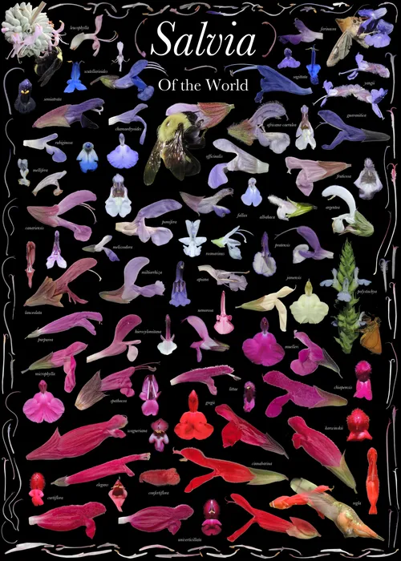
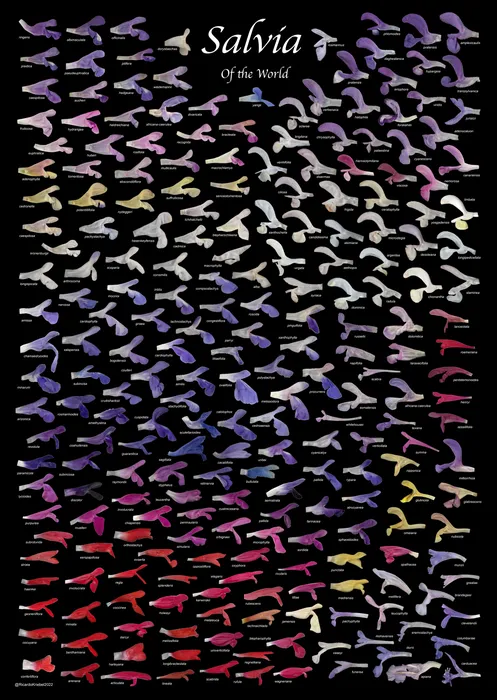
Costa Rica 5
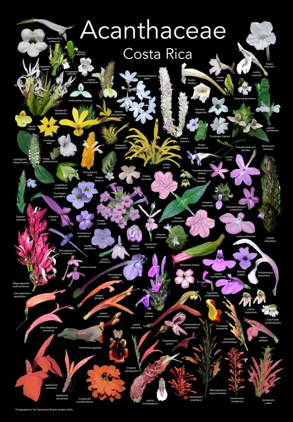
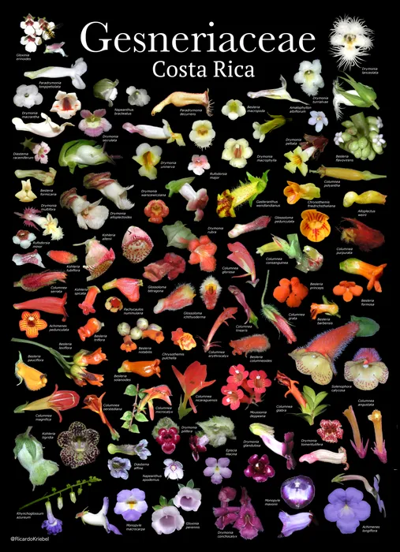
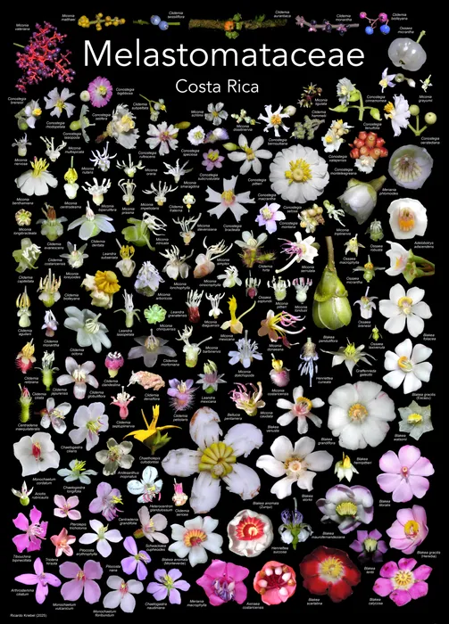
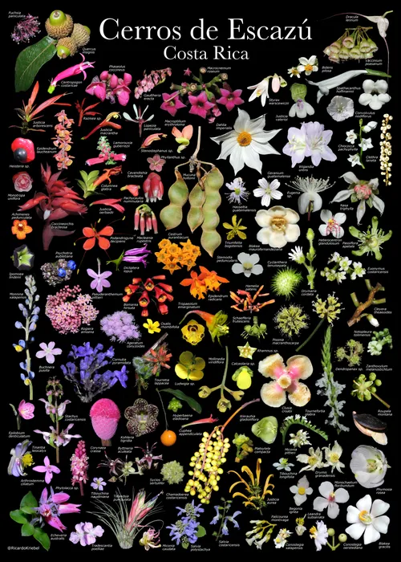
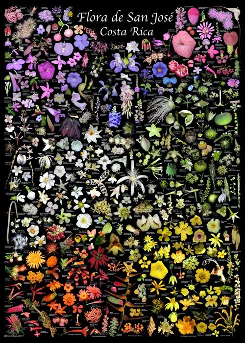
California and Wisconsin 5
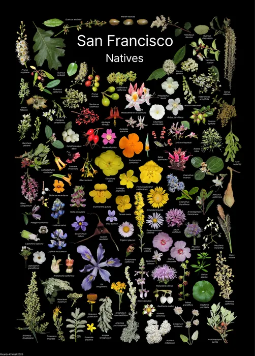
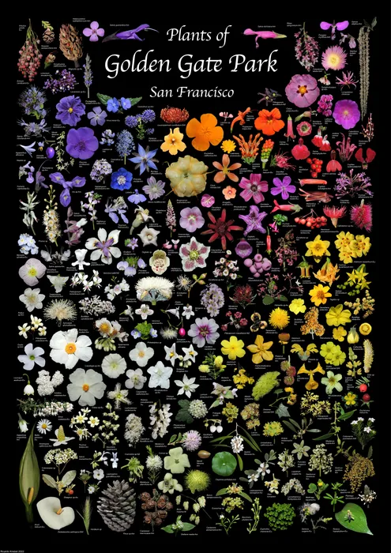
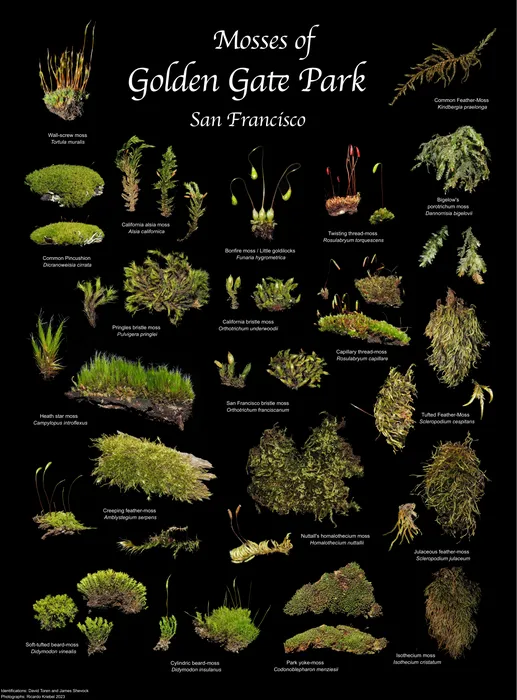
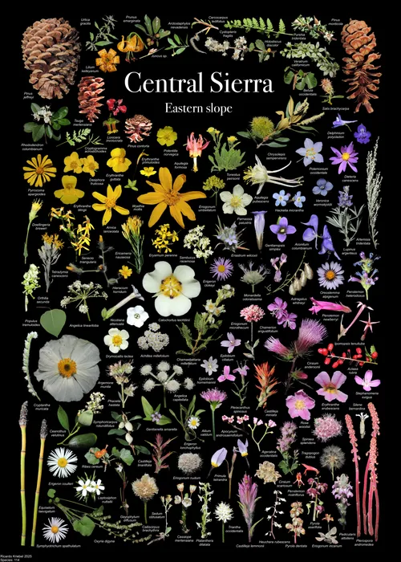
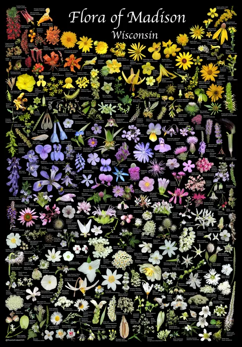
San Francisco Botanical Garden 16
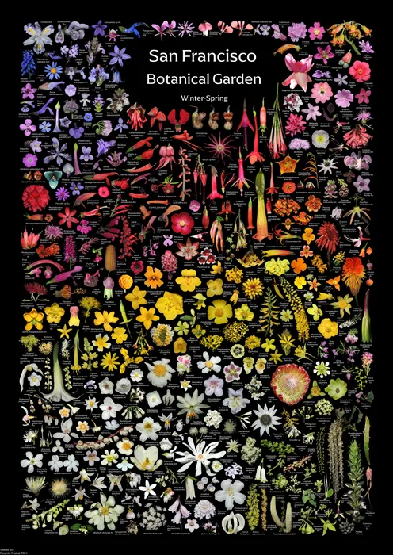
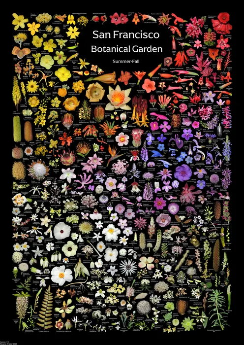
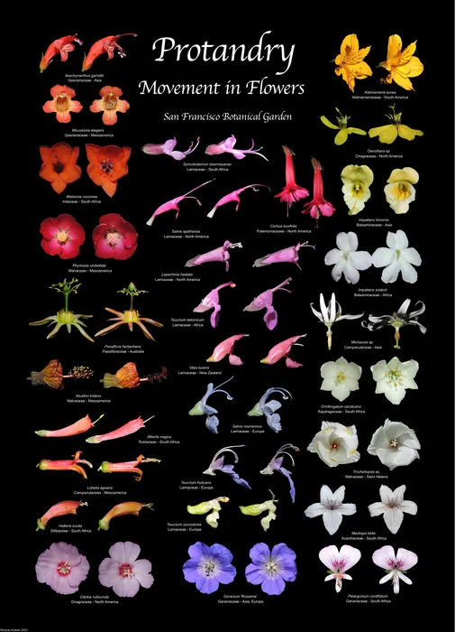
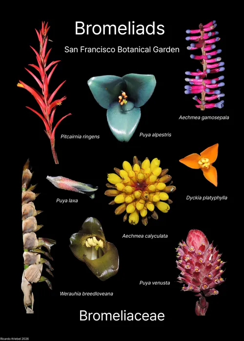
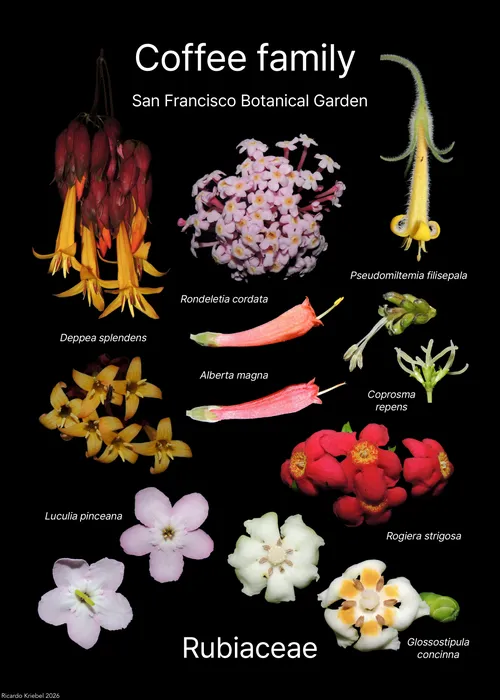
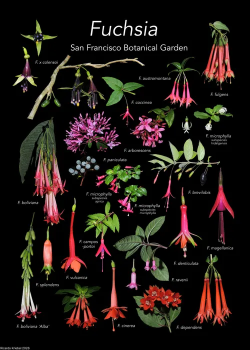
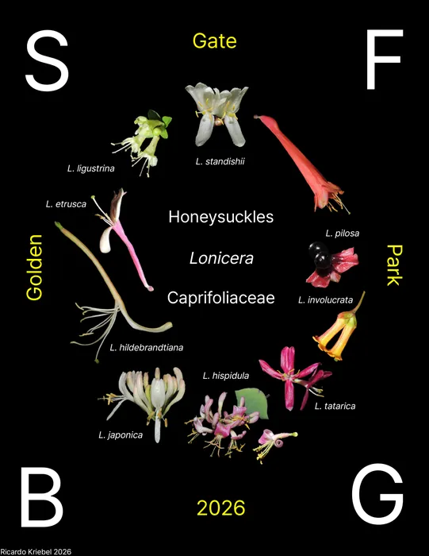
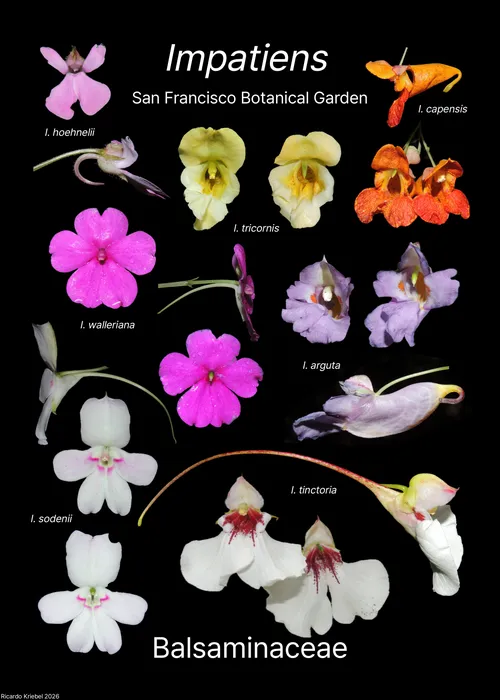
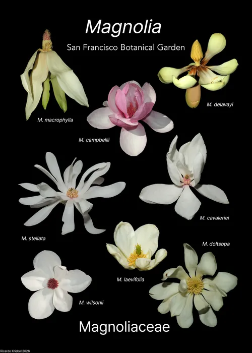
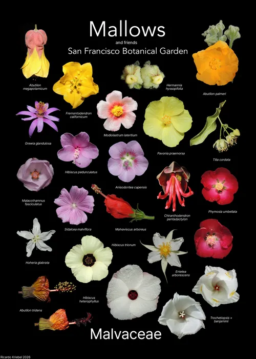
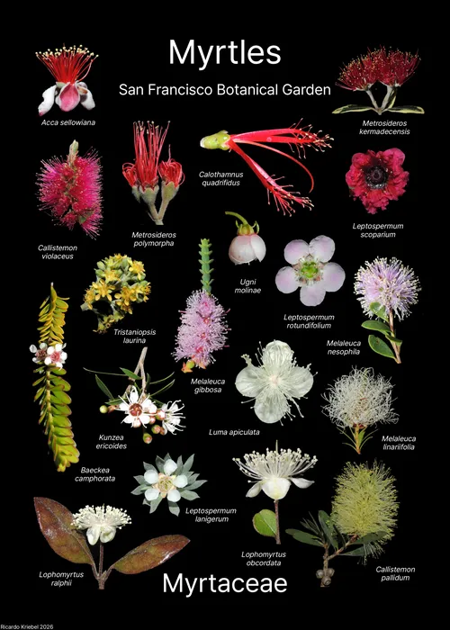
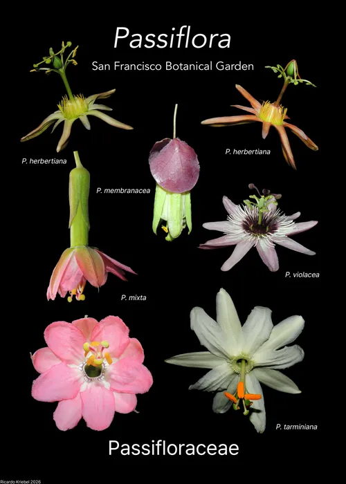
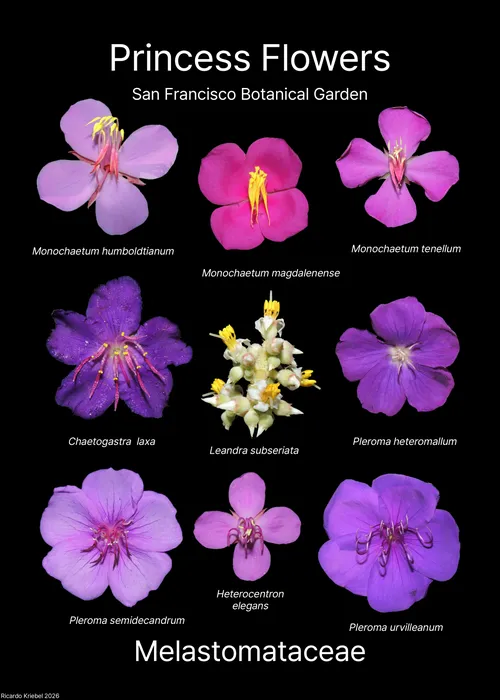
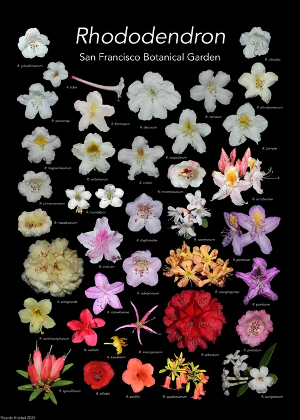
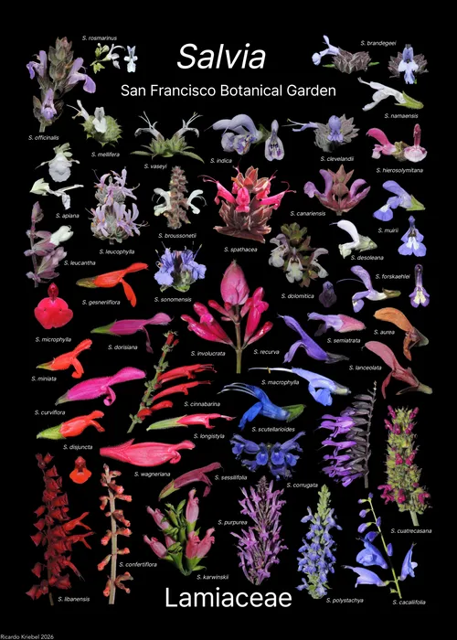
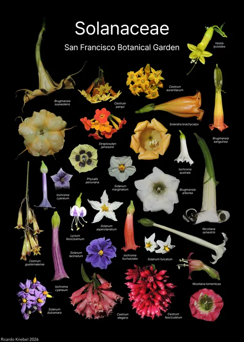